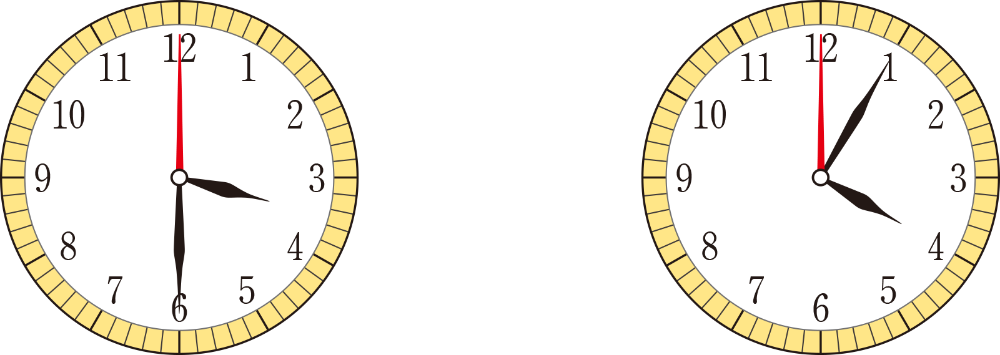

- 그림
- 물음 1
- 물음 2
- 물음 3
-
-
엄마! 저 오늘 학교 끝나고
수학 공부 많이 했어요.기특하구나! 공부를
얼마나 했는데? -
수학 공부를 시작한 시각수학 공부를 끝낸 시각
-
-
민희가 수학 공부를 시작한 시각과 끝낸 시각을 각각 읽어 보세요.
수학 공부를 시작한 시각수학 공부를 끝낸 시각민희가 수학 공부를 한 시각은 3시 30분, 끝낸 시각은
4시 5분입니다. -
민희가 수학 공부를 한 시간을 구하려면 어떻게 해야 할까요?
수학 공부를 끝낸 시각에서 수학 공부를 시작한 시각을 빼면 됩니다.오후 4시 5분과 오후 3시 30분의 차이를 구하면 됩니다. -
민희가 수학 공부를 한 시간을 식을 세워 구해 보세요.
4시 5분－3시 30분＝35분